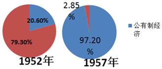
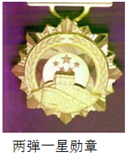

2018年北京市中考历史试题 · 选择题 第16、17、18、19、20题
16．（3分）中国共产党是抗日战争的中流砥柱以下史实能证明这一结论的有（ ）
①九一八事变后，中国共产党领导东北抗战
②促成国共两党再度合作，团结抗战
③建立敌后抗日根据地，开展游击战争
④中国与反法西斯国家结盟，共同作战
A．①②③B．①②④C．①③④D．②③④
17．（3分）人民解放军经历142天的连续作战，从277万人增加到358万人：国民党军队从365万人下降到204万人，主力基本被消灭。取得以上战果的是（ ）
A．转战陕北B．挺进大别山C．三大战役D．渡江战役
18．（3分）如图反映了我国公有制、私有制经济成分比重的变化。导致这一变化的是（ ）
公有制经济和私有经济在国民经济中的比重

A．进行土地改革
B．实行三大改造
C．开展人民公社化运动
D．推行家庭联产承包责任制
19．（3分）如图是党中央、国务院中央军委颁发的功勋奖章，获得这枚奖章的是（ ）

A．邓稼先B．王进喜C．焦裕禄D．袁隆平
20．（3分）下列史实反映的共同主题是（ ）
（1）1992年11月，大陆海协会和台湾海基会达成体现一个中国原则的“九二共识”
（2）1997年7月1日，中国对香港恢复行使主权
（3）1999年12月20日，中国对澳门恢复行使主权
A．祖国统一B．外交成就C．军队建设D．民族团结